Portafolio de inteligencia artificial · Ciudad de México
Abogado corporativo mexicano que construye con inteligencia artificial.
- plugins y agentes en Claude Code
- búsqueda sobre texto legal
- flujos en n8n
- pipelines de datos en Python
- sitios web
- video
- agentes de IA para marketing
00 · En una frase
Escribo el análisis legal y armo los sistemas alrededor de él y más allá. Uso la IA todos los días. Este portafolio es una muestra, no una lista completa: hay proyectos confidenciales y otros que todavía no salen.
Este soy yo
Aquí se construye todo esto.
Mi escritorio: un flujo de n8n en una pantalla y código en la otra.
Formación y comunidad
A la vanguardia: lo nuevo se prueba en trabajo real.
Uso la IA todos los días y me mantengo a la vanguardia de las herramientas y funciones nuevas de IA: las pruebo en trabajo real en cuanto salen.
- Cursos gratuitos en línea de Anthropic (Anthropic Academy).
- Cursos gratuitos en línea de Harvey sobre IA para el trabajo legal.
- Cursos en vivo y pregrabados de la comunidad de tech influencers como Juan Lombana y Enrique Rocha, así como de escuelas digitales como Coderhouse y OrangutanAI.
- Pláticas y workshops de Claude en México, como Claude for AI Engineering (Claude Community CDMX, octubre de 2026), Claude for Legal, Claude for Finance, Claude Community House, Claude for Revenue, Claude for Games, Claude en la Cámara de Diputados y Claude en el Senado de la República, entre otros. En Claude for AI Engineering resumí las cinco ponencias (uso de herramientas, MCP, ingeniería de contexto) y convertí las notas en un agente que responde como lo haría cada ponente.
- Pláticas y workshops de Grok Bot.
- Cenas de networking con CTOs de empresas grandes y medianas.
- Curso de automatización con n8n (en curso): el resumen diario del DOF fue la primera entrega.
Formación académica
2023 a 2025
Maestría en Derecho de la Empresa
Universidad Anáhuac
Disciplina: Derecho Corporativo
2023 a 2024
Master of Business Administration (MBA)
EAE Business School (Madrid, España)
Disciplina: Administración de Empresas
2015 a 2020
Licenciatura en Derecho
Universidad Iberoamericana (CDMX)
Disciplina: Derecho
Mi marca personal y consultoría · pivotek.mx
Pivot
Giro estratégico: un cambio fundamental y deliberado en la estrategia de un negocio (en su producto, su mercado objetivo o su modelo de ingresos) cuando se detecta que la dirección actual no está funcionando, con el fin de sobrevivir y crecer.
Tek
De tech: tecnología.
Le puse así porque sé que en unos años la abogacía no será lo que es hoy, ni lo que era antes de que llegara la IA. Hay que estar a la vanguardia de la tecnología y de las buenas prácticas.

01 · En breve
Seis cifras, un criterio.
25+
Más de 25 proyectos en 2026, desde auditorías regulatorias internacionales hasta un producto legal-tech a la venta.
374
instrumentos de derecho energético indexados para búsqueda en lenguaje natural.
11,112
fragmentos, divididos según la jerarquía de la norma mexicana.
560,000+
contratos de compras públicas en un pipeline que muestra a proveedores de petróleo y gas dónde está el dinero.
10,000+
acciones de navegador automatizadas desde Claude Code.
1
producto en vivo: Con Criterio, a la venta en concriterio.mx desde el 5 de noviembre de 2026.
Automatización con criterio: todo flujo deja a una persona en el circuito cuando hay firmas, dinero o juicio legal de por medio.
- Stripe
- Gmail
- Google Calendar
- Google Drive
- Vercel
- Higgsfield
- Apify
- Canva
- automatización del navegador
- todo desde Claude Code
02 · Mapa de habilidades de IA
Doce habilidades, todas con algo construido.
- 01
Agentes de IA y flujos agénticos
Plugins, skills y subagentes de Claude Code para siete materias del derecho mexicano; un sistema multiagente de nueve roles con señales tipadas; redes sociales operadas por Grok Bot y Muse de Meta.
- 02
Búsqueda sobre documentos (RAG)
RAG legal con embeddings especializados en derecho, pgvector y ranking híbrido sobre 374 instrumentos de energía.
- 03
Ingeniería de datos
Un pipeline sobre más de 560,000 contratos de compras públicas con actualización semanal y auditorías; modelos financieros en Python y Excel.
- 04
Automatización de procesos
Diseños en n8n para un cierre inmobiliario de 20 pasos y un resumen diario del DOF; tareas programadas para la revisión regulatoria mensual y la revisión semanal del segundo cerebro.
- 05
IA para el trabajo legal
Auditorías regulatorias internacionales, revisiones de contratos y de cumplimiento, dictámenes y cartas, cada dato con fuente y fecha de corte.
- 06
Construcción de productos
Con Criterio, del contenido al cobro, la entrega automática y las pruebas con compradores simulados.
- 07
Desarrollo web
concriterio.mx, pivotek.mx, casalegado.mx y carocomunicando.com.
- 08
Video y contenido con IA
Un video de entrada a escenario con locución de IA y motion graphics, y un pipeline automático de Reels con transcripción local y visión por computadora.
- 09
Marketing con IA
Más de una docena de skills de marketing y creatividad aplicados a campañas reales, auditorías SEO y textos de anuncios.
- 10
Integraciones (conectores MCP)
Stripe, Gmail, Google Calendar y Drive, Vercel, Higgsfield, Apify, Canva y más de 10,000 acciones de navegador.
- 11
Criterio y calidad
Compuertas de aprobación humana, reglas antifraude, incertidumbre etiquetada, pruebas golden y construcción reproducible.
- 12
Aprendizaje continuo y comunidad
Uso diario de la IA y de las herramientas nuevas en cuanto salen; cursos gratuitos de Anthropic y Harvey; cursos en vivo y pregrabados de tech influencers y escuelas digitales; pláticas y workshops de Claude y Grok Bot; cenas de networking con CTOs.
03 · Destacado · Producto en vivo
Con Criterio: kit de IA para abogados mexicanos.
Una guía (116 páginas en la edición Claude y 134 en la edición ChatGPT), 7 plugins por materia y 7 skills de redacción. A la venta en concriterio.mx desde el 5 de noviembre de 2026. Desde el 11 de noviembre también ofrece una guía de IA para principiantes, para el público general.
7 plugins por materia
Cada plugin es un conjunto de skills de Claude Code apoyado en un corpus curado de leyes y criterios judiciales verificados, con un formato único de cita, etiquetas de dato y un bloque de validación que corre antes de entregar cualquier respuesta.
7 skills de redacción
- arrendamiento en CDMX
- NDA bilateral
- comisión mercantil
- servicios profesionales
- carta de intención
- carta poder simple
- calculadora de finiquito
- 1/7
LFPDPPP
Protección de datos
Avisos de privacidad, contratos de encargo, transferencias, riesgo de infracción, defensa ante la autoridad.
- 2/7
LGSM
Corporativo
Actas de asamblea, auditoría de estatutos, poderes, due diligence societaria, reestructuras paso a paso.
- 3/7
LFPPI
Marcas
Registrabilidad, oposiciones, nulidad y caducidad, infracciones, plazos ante el IMPI.
- 4/7
LFDA
Derecho de autor
Dictámenes de titularidad, cláusulas de transmisión, limitaciones, aviso y retiro, obras hechas con IA.
- 5/7
Código de Comercio y LGTOC
Contratos mercantiles
Redacción y revisión, pagarés, operaciones de crédito y fideicomiso, intereses y usura, rutas de cobro.
- 6/7
Leyes de energía de 2025
Energía
Ruta de permisos, proyectos eléctricos y de hidrocarburos, sanciones, comparativo 2014 contra 2025.
- 7/7
Ley del Notariado y Ley Registral
Notariado CDMX
Requisitos de la escritura, testamentos y voluntad anticipada, sucesión ante notario.
Cómo se hizo, en números
115
afirmaciones verificadas y 46 capturas en la guía de la edición Claude. La edición ChatGPT se adaptó con pasos de instalación para Windows.
101
pruebas automáticas sin fallas en el Worker de Cloudflare que entrega los archivos y opera el boletín. Venta con página propia, ligas de pago y webhook de Stripe.
118
hallazgos distintos y cero bloqueantes en una ronda simulada con 20 compradores; 114 de los 115 hallazgos abiertos se cerraron el mismo día.
Día 1
de cada mes corre una revisión regulatoria programada. Un monitor en Python lee el DOF con el servicio de datos abiertos del gobierno y marca lo que toca a las leyes que cubre el producto.
- Su propia capa legal: términos y condiciones, aviso de privacidad y licencia de uso.
- Marketing: contenido producido con Claude Code y publicado por agentes de IA, auditoría SEO, dos campañas de Google Ads preparadas y el Pixel de Meta conectado al flujo de pago.
04 · Destacado · RAG
Un motor de búsqueda sobre derecho energético mexicano.
Problema. Las reglas de energía en México están dispersas entre el DOF y los sitios de ocho autoridades, y la reforma de 2025 sustituyó buena parte del marco. Encontrar el instrumento que de verdad aplica, y saber si sigue aplicando, toma horas.
Qué construí. Un pipeline que recopila, estructura e indexa la legislación energética mexicana para consultarla en lenguaje natural. Sin LangChain ni LlamaIndex: Python y SQL directos.
Escala (abril de 2026)
374 documentos
11,112 fragmentos, todos con embedding
352 vigentes 22 abrogados
- CRE
- SENER
- CENACE
- CNH
- CENAGAS
- CNE
- ASEA
- Congreso
Etapa 1
Recopilación
Scrapers asíncronos sobre el DOF y los sitios de los reguladores, con pausas entre solicitudes.
Etapa 2
Extracción
Texto de los PDF con respaldo de OCR para documentos escaneados.
Etapa 3
Segmentación
Divide el texto según la jerarquía de la norma mexicana (título, capítulo, artículo) y no por tamaño fijo.
Etapa 4
Almacenamiento
PostgreSQL con pgvector: documentos y fragmentos, marca de vigencia y una nota de vigencia para normas formalmente vigentes pero suspendidas en la práctica.
Etapa 5
Embeddings
Voyage AI
voyage-law-2, hecho para texto legal.Etapa 6
Búsqueda
Ranking híbrido (similitud vectorial y palabras clave, combinadas con reciprocal rank fusion), sinónimos, detección de leyes y ponderaciones.
Etapa 7
Respuestas
Claude contesta preguntas en lenguaje natural sobre los fragmentos recuperados.
Etapa 8
Calidad
Juego de pruebas "golden" como barrera de regresión (9 de 9) y auditorías de la base por duplicados, vigencia y fechas de publicación.
05 · Destacado · Datos a escala
SupplySense: dónde está el dinero en petróleo y gas.
Problema. Los proveedores del sector de petróleo y gas en México licitan a ciegas: no saben quién compra lo que venden, a qué precio ni cuándo. Qué construí: una herramienta de inteligencia de precios con datos de compras públicas.
Más de 560,000 contratos de CompraNet (2023 a 2025) en 26 categorías
150,000 contratos recientes de ComprasMX obtenidos con Playwright
Cada punto: 1,000 contratos
- 01
Carga
Más de 560,000 contratos de CompraNet (2023 a 2025) en 26 categorías, más 150,000 contratos recientes de ComprasMX.
- 02
Actualización
Descarga semanal automática con eliminación de duplicados; datos enriquecidos con geografía y orden de gobierno; ligas por subsidiaria de PEMEX.
- 03
Tablero
Indicadores, listas de seguimiento, filtros por giro, búsqueda global y exportación a CSV y PDF; multi-cliente básico.
- 04
Auditorías
Detectaron y corrigieron categorías mal clasificadas y valores atípicos, más un análisis del tamaño de mercado (TAM).
06 · Destacado · n8n
Un cierre inmobiliario de 20 pasos, automatizado con freno de mano.
Problema. Un despacho inmobiliario en Baja California cierra compraventas de extranjeros a través de fideicomisos bancarios. Cada cierre tiene 20 pasos y depende de la notaría, el banco fiduciario, el valuador, el escrow y el Registro Público. La mayor parte del tiempo de los abogados se va en perseguir documentos y contestar "¿cómo va mi cierre?".
- 11pueden correr casi solos
- 7quedan asistidos
- 2siguen siendo humanos: la revisión jurídica del proyecto de escritura y la firma ante notario
Un bloque por paso, en el orden del cierre. Pasa el cursor para ver cuál es.
Disparador
Se abre el escrow
- Permiso de la SRE
- Proyecto de escritura
- Avalúo
- Certificados
Los pasos 4 a 7 arrancan en paralelo en cuanto se abre el escrow, lo que podría ahorrar de 7 a 10 días por cierre [ESTIMADO].
Las 9 piezas del diseño
- 01
Expediente único
Una fila por operación con compradores, unidad, banco, notaría, escrow, fechas de cada paso, vigencias y estatus.
Google Sheets al inicio; base de datos propia si crece el volumen
- 02
Carpeta por operación
Estructura fija creada sola: de 01 Cliente a 08 Post-cierre.
Google Drive
- 03
Correo saliente
Plantillas bilingües para cliente, notaría, banco, valuador, HOA y escrow, llenadas desde el expediente.
Gmail
- 04
Lector de correo entrante
Clasifica los correos de terceros, los liga a la operación, guarda adjuntos y mueve el estatus.
Gmail e IA
- 05
WhatsApp
Avisos, recordatorios y un bot que contesta "¿cómo va mi cierre?" desde el expediente.
WhatsApp Business API
- 06
IA documental
Lee pasaportes y certificados, compara el proyecto de escritura, resume videollamadas y comentarios del banco.
API de Claude, con aprobación humana
- 07
Temporizadores y compuertas
Plazos por paso, vigencia de certificados y compuerta de firma.
n8n
- 08
Tablero del socio director
Operaciones por etapa, días en cada paso, quién está atorando, alertas.
Google Sheets o Looker Studio
- 09
Bitácora y errores
Registro de cada ejecución y aviso inmediato si un flujo falla.
n8n
Compuerta de firma
Nadie agenda el cierre hasta que se cumplen seis condiciones.
- Permiso de la SRE otorgado
- Avalúo recibido
- Certificados vigentes a la fecha propuesta, y no sólo a hoy
- Proyecto aprobado por el banco fiduciario
- Fondos confirmados en escrow
- Saldo final pagado
6 de 6: el cierre ya se puede agendar
Antifraude · alerta roja
Ningún flujo envía cuentas bancarias, y cualquier correo sobre cambio de instrucciones de pago lanza una alerta roja y exige llamada de verificación.
- IA documental con aprobación humana. Lee pasaportes y certificados y compara el proyecto de escritura con el expediente.
- Los datos del cliente nunca viven en mi infraestructura. La demo corre con datos ficticios y la producción va en el servidor propio del despacho.
Estatus · etapa de diseño (noviembre de 2026)
Propuesta entregada; decisiones en un registro de decisiones; implementación planeada en 4 fases de 10 a 13 semanas [ESTIMADO], empezando con un piloto en un solo desarrollo. Ahorro esperado: de 50% a 70% de las horas de talacha por cierre [ESTIMADO], a medir en el diagnóstico.
07 · n8n · Resumen diario del DOF
El DOF de energía, en mi correo a las 8:30.
Problema. Cada mañana revisaba el DOF a mano para ver si salió algo que afectara a mis clientes de energía: unos 30 minutos al día [ESTIMADO].
Schedule
lun a vie, 8:30
HTTP Request
índice del día
HTML
título, dependencia, liga
Filter
palabras y dependencias de energía
Aggregate
todo junto
LLM
una frase + prioridad
Gmail
correo diario
Unas 100 horas al año de ahorro [ESTIMADO]
Resultado. Un correo diario con las publicaciones de energía ordenadas por prioridad. El flujo me dice qué leer; leerlo sigue siendo mi trabajo.
Se hizo como primera entrega de un curso de automatización con n8n, con el prompt documentado y un plan de manejo de errores.
08 · Trabajo legal y regulatorio
Nueve asuntos hechos con IA. Todos anonimizados.
Se quitaron nombres, cifras y datos que identifiquen a los clientes. Cada fila dice qué entregué y cómo se usó la IA.
01Entrada a Arabia Saudita de tres contratistas mexicanos del sector energético (ductos, construcción industrial, sistemas contra incendio costa afuera)
Qué entregué
Auditorías de empresa y rutas de entrada: por cuál línea de negocio, por cuál puerta y qué la detiene hoy. Hallazgo clave: el obstáculo casi nunca fue la demanda, sino certificaciones faltantes o un modelo de intermediación que el dueño extranjero de la tecnología puede saltarse vendiendo directo en el Golfo.
Cómo se usó la IA
Investigación con fuentes oficiales descargadas por categoría; cada dato con fuente y fecha de corte; un mismo marco regulatorio saudita reutilizado en los tres expedientes; scripts que regeneran los PDF.
02Exportación de carne de bovino a Arabia Saudita (grupo cárnico del sureste)
Qué entregué
Ruta regulatoria (autoridad sanitaria saudita, certificación halal, SENASICA), presentaciones de mercado para Arabia Saudita y Asia, y consultas directas a autoridades de ambos países.
Cómo se usó la IA
Investigación y redacción con Claude; un prompt reutilizable para investigar pendientes.
03Contrato de servicios petroleros a 10 años con un ministerio de energía centroamericano
Qué entregué
Mapa de obligaciones, plazos críticos, compliance interno, alertas operativas y observaciones al análisis del propio cliente.
Cómo se usó la IA
Extracción estructurada del contrato a un archivo de contexto; entregables en Word.
04Guía de cumplimiento publicitario para productos de salud al consumidor (empresa global)
Qué entregué
Verificación de cada fuente citada (guías de COFEPRIS, NOM, códigos de la industria), 19 recomendaciones y versión 3 de la guía con control de cambios y 8 comentarios de validación.
Cómo se usó la IA
Textos oficiales descargados y convertidos a texto plano para cotejo; reporte con semáforo por sección.
05Respuesta institucional de una dependencia estatal a una cadena hotelera internacional
Qué entregué
Tres versiones de la carta bajo reglas estrictas de redacción: no admitir, no disculparse, no ofrecer, no tocar temas vedados.
Cómo se usó la IA
Reglas de redacción escritas como restricciones; un script regenera los tres entregables.
06Due diligence de un permiso de comercialización de petrolíferos
Qué entregué
Verificación del permiso, su resolución, la firma electrónica y el QR, y los padrones públicos del SAT; one-pager.
Cómo se usó la IA
Verificación de fuentes y one-pager en HTML y PDF.
07Dictamen de viabilidad de marca para un despacho
Qué entregué
Dictamen preliminar de registrabilidad conforme a la LFPPI.
Cómo se usó la IA
Hecho con mi propio plugin de marcas.
08Propuesta de una comercializadora de combustibles a la ANH de Colombia
Qué entregué
Análisis crítico de una presentación institucional de 33 láminas.
Cómo se usó la IA
Análisis con Claude sobre la presentación.
09Nota técnica sobre IA en el sector energético para el Senado de la República
Qué entregué
Nota técnica y carta de presentación a un senador.
Cómo se usó la IA
Investigación y redacción con Claude; Markdown a PDF.
09 · Sitios web, video y marketing digital con IA
Cuatro sitios en vivo, video y agentes que publican.
-
concriterio.mx
Sitio de venta de Con Criterio: página para abogados y /para-todos para principiantes, con panel "Arma tu compra".
Páginas y textos legales generados con scripts de Python; ligas de pago de Stripe y un Worker de Cloudflare para el cobro y la entrega; Cloudflare Pages, DNS y Web Analytics; Pixel de Meta y dos campañas de búsqueda en Google Ads configuradas.
-
pivotek.mx
Casa de este portafolio. Sustituyó el sitio anterior en Next.js de PIVOTEK, mi marca personal y consultoría, que también construí (TypeScript, formulario con Resend, SEO técnico).
Diseñado y construido por Fable 5.2 (Claude) a partir del texto de mi README, bajo mi dirección: 20 secciones con animaciones de scroll propias, con GSAP, ScrollTrigger y Lenis auto-hospedados y política de seguridad estricta; desplegado en Vercel.
-
casalegado.mx
Mi marca de documentales biográficos: sitio de cinco páginas, más brandbook, dossier y presentación de ventas.
HTML y CSS estáticos con un sistema de marca estricto (dos familias tipográficas, paleta cálida y reglas de voz), imágenes ilustrativas generadas con Higgsfield, aviso de privacidad, sitemap y política de seguridad de contenido; desplegado en Vercel.
-
carocomunicando.com
Sitio de una capacitadora en oratoria y comunicación: home con portada animada, su método, su charla TEDx, casos y la marca.
Sitio estático con GSAP, ScrollTrigger y Lenis auto-hospedados; guía PDF descargable con captura opcional de correo; GA4, Microsoft Clarity y Vercel Analytics declarados en el aviso de privacidad y el banner de cookies; auditoría SEO y artículos de blog.
Video para una conferencista
-
102s
Intro de entrada a escenario
Se proyecta antes de que suba. Cinco versiones; la vigente combina motion graphics hechos en Remotion, locución con voz de IA (ElevenLabs v4 a través de Higgsfield), música y efectos originales, y sus fotos. Incluye un loop de espera para la pantalla y tres Reels cortos para Instagram. Cada versión se regenera con scripts (Python, Node y ffmpeg).
-
40s
Resumen de evento
Su papel como conductora y moderadora de una cumbre universitaria de emprendimiento: 9:16 para Reels, TikTok y LinkedIn y 16:9 para YouTube, con música original sincronizada con el momento en que se encienden las luces del escenario.
-
10s
Loop para la presentación de su libro
Pantalla animada con frases que rotan cada 10 segundos y códigos QR verificados a su Instagram y a su sitio.
Pipeline automático de Reels
Se deja un video crudo en Descargas y sale un Reel terminado.
- 1
Transcripción
Palabra por palabra, local, con Whisper.
- 2
Reglas de estilo
Aprendidas de una creadora de referencia: cuatro Reels analizados cuadro por cuadro (corte a material de apoyo cada 5 a 9 segundos, pastillas de título, pregunta de cierre).
- 3
Apoyos visuales
Fotos reales con licencia libre de Wikimedia Commons y Openverse, con crédito, o material generado con Higgsfield.
- 4
Recorte y seguimiento de cara
Con el framework Vision de Apple (Swift).
- 5
Edición automática
En Python: formato, subtítulos, pastillas, tarjetas, créditos de fotos y recuadro de la conferencista; un historial evita repetir formatos.
Seis Reels listos para publicar en noviembre de 2026, un juego mensual de guiones y una guía técnica para publicar con la API Graph de Instagram y n8n.
Redes sociales operadas por agentes de IA (Con Criterio)
Claude Code
Produce
El contenido y el calendario de publicación, los prompts de los agentes y las listas para verificar su trabajo.
Grok Bot (agente que opera mi Mac)
2 Reels diarios
En TikTok, más la prospección y los mensajes directos de Instagram; si la Mac está dormida o pide un código, se detiene y avisa.
Muse (agente de marketing con IA de Meta)
3 piezas diarias
En Instagram y Facebook; opera las campañas y sigue la conversación cuando un prospecto contesta.
El etiquetado de contenido generado con IA se revisó con Muse, y hay prompts de verificación que auditan lo que de verdad hizo cada agente.
- humanizalo-es
- social-content
- content-strategy
- copywriting
- marketing-psychology
- pricing-strategy
- ad-creative
- campaign-plan
- seo-audit
- Skills de Higgsfield
- frontend-design
- emil-design-eng
- apify-lead-gen
- abogado-el-diablo
Skills de marketing y dónde los apliqué
- humanizalo-esTextos de carocomunicando.com y sus Reels, páginas y publicaciones de Con Criterio, entregables del curso.
- social-contentGuiones y calendario de Reels de la capacitadora; estrategia de redes de Con Criterio.
- content-strategyEstrategia de contenido de Con Criterio para Instagram, Facebook y TikTok.
- copywritingPlanes de negocio y sitio de la capacitadora.
- marketing-psychologyOferta y páginas de la capacitadora; planes de negocio.
- pricing-strategyPrecios en planes de negocio y propuestas de la capacitadora.
- ad-creativeVariaciones de anuncios para las campañas de la capacitadora.
- campaign-planPlan de tráfico y contactos de la capacitadora (noviembre de 2026).
- seo-auditAuditorías de carocomunicando.com y concriterio.mx.
- Skills de HiggsfieldIntro de la conferencista, material de apoyo y loop del libro; imágenes de Casa Legado; piezas explicativas de Con Criterio.
- frontend-design y emil-design-engPágina de venta de Con Criterio.
- apify-lead-genBase de prospectos para un servicio de sitios web en Los Cabos.
- abogado-el-diabloEstrategia de lanzamiento de Con Criterio.
10 · Conectores (MCP)
Claude Code llega a mis herramientas: automatizo, consulto y genero.
Las cifras salen de los registros de mis propias sesiones.
Automatizar
- Gmail, Google Calendar y Google DriveRevisión semanal de agenda y correo, borradores y seguimientos, búsqueda de archivos.
- Tareas programadasRevisión semanal del segundo cerebro, revisión regulatoria mensual, seguimiento de campañas.
- VercelProyectos, dominios y analítica web de mis sitios.
Consultar
- ApifyExtracción de datos web, listas de prospectos y navegación para investigar.
- Wispr FlowBúsqueda en mis notas de reuniones.
Generar
- CanvaDiseños a partir de kits de marca.
- Artifacts de ClaudePáginas para compartir.
Además, dos agentes externos (Grok Bot y Muse) y herramientas locales de línea de comandos: Obsidian, GitHub, Whisper y ffmpeg.
11 · Acompañante de escritorio
BeCa: mi gato sabe qué está haciendo Claude.
BeCa es mi gato convertido en un acompañante en estilo sticker que vive en una ventanita flotante de mi Mac. Escucha los hooks del ciclo de vida de Claude Code, así que de un vistazo sé qué está haciendo Claude sin mirar la terminal. ¿Por qué BeCa? Para darle un sentido del humor a mi día a día con la IA mientras trabajo.
clickCon un clic saluda; con otro juega unos cuatro segundos con Clawd.
Corre en local, sin red y sin guardar contenido. Los hooks son globales, así que BeCa funciona en todos los proyectos.
Claude Code abre una sesión
SessionStartSaluda dos veces y se queda en reposo
Trabaja en una petición o usa una herramienta
UserPromptSubmitPreToolUsePostToolUseTeclea en el aire
Edita o escribe un archivo
PostToolUsedeEditoWriteRevisa con la pata en el mentón
Termina su turno
StopSalta cuatro veces y saluda
Espera mi permiso o mi respuesta
PermissionRequestNotificationPide con las patas juntas
Choca con un error de la API
StopFailureSe desinfla una vez
Cierra la sesión
SessionEndReposa
Cómo se hizo: app nativa de macOS en Swift, hecha con Claude Code; el arte se generó con Higgsfield a partir de tres fotos de mi gato y se cortó en tiras de animación con scripts de Python; los sonidos se extrajeron de clips de video generados con IA.
12 · Herramientas y sistemas
Sistemas que trabajan mientras trabajo.
Segundo cerebro en Obsidian y Claude Code
Una nota por proyecto, persona y documento oficial; cada sesión de trabajo deja su entrada en la bitácora; una tarea programada lee mi calendario y mi correo cada domingo (sólo lectura) y actualiza la bóveda; respaldo cada hora con launchd. Este portafolio se armó a partir de ahí.
Sistema multiagente personal
Nueve roles especializados leen un mismo expediente, se pasan señales tipadas en lugar de prosa y siguen una regla de precedencia declarada cuando se contradicen. Uso personal; no se muestran datos.
CRMs internos propios
Los armé sobre la arquitectura de auto-crm, un CRM local y open-source con Next.js, SQLite y Claude Code que se adapta a cada negocio.
13 · Estudios de viabilidad
Cada estudio, con veredicto y semáforo por fase.
Proyectos propios y servicios de PIVOTEK, mi consultoría.
Transporte de petrolíferos por autotanque de La Paz a Los Cabos
GO condicionadoGasolinera con franquicia en Los Cabos
GO condicionadoPlanta de vidrio procesado para el sector inmobiliario de BCS Prefactibilidad con modelo financiero en Python, 782 registros del DENUE y una matriz de 24 permisos industriales.
GO condicionado en dos fasesDocumentales biográficos (Casa Legado) Viabilidad, modelo de negocio, modelo financiero, marca y sitio ejecutados.
Fábrica de hielo, consultoría de capital humano, tours marítimos y un plan de negocio en Los Cabos
Servicio de monetización para minas pequeñas y medianas Deck de venta y prompt maestro.
Modelo de plusvalía inmobiliaria a 10 años en Excel con fórmulas vivas
14 · Cómo trabajo con IA
Siete reglas que no se negocian.
Primero la fuente.
Los textos oficiales se descargan al proyecto y cada dato lleva su fuente y fecha de corte.
La incertidumbre se etiqueta.
Todo entregable marca [ESTIMADO], [SUPUESTO] y [BRECHA DE DATO].
Lo importante lo aprueba una persona.
Firmas, dinero y juicio legal siempre pasan por alguien.
Entregables reproducibles.
Primero Markdown y luego PDF con pandoc y Typst; scripts que regeneran los archivos finales.
Las decisiones quedan registradas.
Registros de decisiones y semáforos VERDE, AMARILLO y ROJO.
Se prueba como usuario.
Compradores simulados, juegos de pruebas golden, pruebas automáticas y verificación contra el sitio en vivo.
La validación es explícita.
Los estudios dicen qué debe confirmarse con la autoridad competente y no constituyen opinión legal.
15 · Herramientas técnicas
- IA
- Claude Code (skills, plugins, subagentes, conectores MCP, hooks, tareas programadas)
- API de Claude
- embeddings de Voyage AI
- ChatGPT y Codex
- Higgsfield (imagen, video, voz y música)
- Grok Bot
- Muse de Meta
- Datos
- Python
- PostgreSQL con pgvector
- Playwright
- pdfplumber y OCR
- Excel
- Automatización
- n8n
- Docker
- launchd
- tareas programadas
- Video
- Remotion
- ffmpeg
- Whisper
- Apple Vision (Swift)
- Web
- Next.js
- TypeScript
- HTML y CSS estáticos
- GSAP
- Cloudflare Workers
- Vercel
- Stripe
- Resend
- Web3Forms
- Marketing y analítica
- GA4
- Microsoft Clarity
- Vercel Analytics
- Google Ads
- Pixel de Meta
- Google Search Console
- Documentos
- Markdown
- pandoc
- Typst
- Word con control de cambios
- Conocimiento
- Obsidian